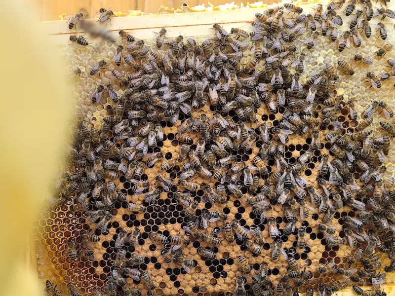

A Year in the Apiary - April Beekeeping Tasks (UK)
April is where the beekeeping season truly gathers pace in the UK. Colonies expand, brood nests grow and the first serious nectar flows may begin, depending on your location. Regular inspections, space management, feeding decisions and swarm control preparation all start to matter much more.
This page is part of the BeezKnees Year in the Apiary – monthly beekeeping calendar. It focuses on April beekeeping tasks in the UK: how to carry out spring inspections, assess queens and brood, prepare for swarm control, add supers and keep colonies safe and productive. It also works well alongside our guides on step-by-step inspections, swarm and queen management and varroa management.
April at a Glance – Key Spring Priorities
Bee Behaviour
- Brood nest expanding rapidly as weather improves
- Foraging increases on warmer, dry days
- Drone brood often appears as colonies grow
Key Jobs for the Beekeeper
- Inspect hives regularly (7–10 days when weather allows)
- Check brood pattern, queen status and space
- Start planning and preparing for swarm control
Risks to Watch
- Starvation during unsettled spring weather
- Chilling brood with long inspections in cold spells
- Early swarm preparations in strong colonies
What Your Bees Are Doing in April

By April, many colonies in the UK are building up quickly. The brood nest expands, populations rise and bees may begin to take advantage of spring nectar flows. You will often see more consistent foraging, with bees returning loaded with pollen from dandelions, fruit blossom, willow and other spring sources.
Spring weather can still be unpredictable, with warm spells followed by cold or wet periods. This can affect when you inspect and how much forage is available. It is important to balance regular inspections with avoiding unnecessary disturbance on marginal days. Guidance on good inspection technique can be found in the hive management guide.
Checking Food Stores – April Starvation Risk
Even though forage is improving, April can still be a starvation month if weather turns poor or colonies grow faster than the flow. Strong, expanding colonies can use food quickly, especially when temperatures fall again and flying is limited.
- Continue to heft hives regularly and compare weight between visits.
- During inspections, check that there are frames of sealed stores near the brood area.
- If stores are low, consider feeding – typically syrup in spring once weather is suitable and bees can fly.
Avoid feeding unnecessarily when a good nectar flow is on, but do not risk colonies going short. If you are unsure whether a colony still needs support, compare hive weights, check store frames carefully and review what happened earlier in March. Your notes from January, February and March – especially if kept in tools like the HiveTag web app – will help you spot hives that have been light repeatedly.
Spring Inspections – What to Look For in April
By April, full inspections become routine when weather allows. These visits let you assess colony health, plan for swarm control and decide when to add space. Aim for a calm, methodical approach that checks what you need without over-handling frames.
- Is the colony queenright – are eggs and young larvae present?
- Does the brood pattern look healthy, with good coverage and few random empty cells?
- Are there enough bees to cover the brood and work most frames in the brood box?
- Are there early signs of swarm preparation, such as queen cups or charged queen cells?
- Are there clear signs of disease or pests that need investigation?
Keep your smoker and spare equipment ready, and write up your inspection promptly afterwards so that patterns and concerns are captured while fresh in your mind.
Swarm Control Preparation – Getting Ahead in April
April is when many UK beekeepers shift from “checking winter survival” to “preventing swarms.” Strong colonies, rapidly expanding brood and good forage can all increase the urge to swarm, especially if space is limited or queens are older.
- Make sure you understand at least one swarm control method before queen cells appear.
- Check that hives have enough brood space and that queens are not cramped by honey or pollen.
- Have spare boxes, floors and frames ready in case you need to carry out a split or artificial swarm.
- Consider which colonies are most likely to need close monitoring based on strength and temperament.
If you are new to swarm control, your local association can be a huge help. Many run practical sessions or mentoring schemes, and you can also review core principles in the hive management guide. It also helps to read ahead on swarm and queen management, especially if you may need to make quick decisions once queen cups or charged queen cells appear.
Queen Status, Marking and Temperament
April inspections are a good time to confirm queen status and consider whether you are happy with each colony’s behaviour and performance. A calm colony with a solid brood pattern and good spring build-up is a strong asset for the season.
- Check whether queens are marked and, if not, whether you plan to mark them under suitable conditions.
- Note any colonies that are excessively defensive or consistently underperforming.
- Begin thinking about which colonies you might want to breed from or replace later in the year.
Record these observations carefully – they will guide decisions on splits, queen rearing and requeening in later months.
If you are unsure whether a colony is preparing to swarm, replacing a failing queen or simply building up strongly, it helps to compare what you see with the brood pattern guide and the swarm and queen management section.
Adding Supers and Managing Space
As April progresses and nectar flows improve, colonies may quickly fill the brood box with brood, pollen and honey. Adding supers at the right time helps prevent congestion, supports honey storage and can reduce swarm pressure. In strong colonies, waiting too long can leave the brood nest feeling cramped or honey-bound.
- Add a super when bees are occupying most frames and forage is good, rather than waiting until they are crowded.
- Use drawn comb where possible for a quick start; foundation can be used but may take longer to draw in cool weather.
- Keep notes of when supers were added and how quickly they fill – this helps planning in future seasons.
For a broader look at how space management fits into the season, see the relevant sections in the hive management guide.
Disease Awareness and Varroa Monitoring
With more brood on the frames, April inspections also provide a chance to review disease risk and varroa levels. While major treatments often happen at a different point in the season, monitoring and awareness should be continuous.
- Note colonies that appear weaker than expected or show signs of virus, such as deformed wings.
- Consider using monitoring methods, such as drone brood uncapping, as appropriate to your system.
- Keep treatment records up to date so you know when and how colonies were treated previously.
Detailed guidance on recognising and managing disease can be found in the bee diseases overview and dedicated pages for bacterial diseases, viral diseases and pests and parasites, with varroa-specific information in the varroa management guide.
Hygiene, Equipment and Apiary Tasks
Good hygiene and well-maintained equipment make inspections more efficient and help reduce disease risks. April is a good time to finish leftover winter jobs and tidy the apiary before the busiest months arrive.
- Continue cleaning and scorching boxes and floors as needed, following safe hygiene practices.
- Replace damaged, mouldy or heavily soiled frames on a planned basis.
- Ensure stands are stable and hives are level or slightly tilted forward.
- Check water sources and access paths around the apiary.
You can find more on cleaning equipment and managing comb in the hygiene guide and equipment guide. April can also be a sensible time to begin a gradual comb replacement plan, replacing one or two old, dark or damaged frames over the season rather than leaving it until colonies are under heavier pressure later in spring.
Record Keeping, HiveTag and Ongoing Learning
April inspections generate a lot of information: brood patterns, queen performance, food levels, swarm risk and more. Good records turn that stream of observations into useful long-term knowledge.
- Dates and outcomes of each inspection.
- Notes on brood pattern, queen status and temperament.
- Food levels, feeding actions and super additions.
- Any queen cells, swarm signs or splits carried out.
Digital tools like the HiveTag web app can help you log these details consistently, making it easier to compare colonies and review decisions across the whole season.
April is also a good time to continue building your knowledge through local association meetings, study groups and trusted reading. The guides on getting started and honeybee behaviour are useful refresher resources as you interpret what you see on the frames.
Forage and Helping Pollinators in April
April brings a noticeable increase in forage: fruit trees, dandelions, oilseed rape (in some regions), willow and ornamental garden plants can all contribute nectar and pollen. Supporting this early abundance benefits both honey bees and other pollinators.
- Delay cutting lawns and verges where possible to allow dandelions and other flowers to bloom.
- Plant and maintain nectar-rich shrubs and perennials that flower in spring.
- Avoid using insecticides and herbicides on flowering plants that bees visit.
For more ideas on making gardens and local spaces supportive for bees and other pollinators, see the bee gardening guide and the broader Help the Bees section.
Emergency Scenarios – Problems That Can Arise in April
- Starvation in strong colonies following a spell of cold, wet weather.
- Queen issues – failing queens, drone-laying queens or signs of queenlessness.
- Sudden weakness in a colony that previously looked strong, which may suggest disease or queen problems.
If you discover a serious issue, seek guidance quickly – from your local bee inspector, association mentors or trusted resources. The pages on bee diseases and bee stings and safety both include useful information to support safe, informed decisions.
Related April Beekeeping Guides
If you are working through your spring management plan, these guides will help you go deeper into the tasks that often matter most in April.
Step-by-Step Inspections
A practical guide to carrying out calm, methodical hive inspections and knowing what to look for on each frame.
Swarm & Queen Management
Learn how to read queen cells, reduce swarm pressure and decide what action to take as colonies build strongly.
Brood Pattern Guide
Use brood patterns to judge queen quality, colony health and whether anything needs closer investigation.
Varroa Management
Understand how varroa fits into spring colony health, monitoring and seasonal treatment planning.
May Beekeeping Tasks
See what usually comes next as swarm control, supers and colony expansion become even more important.
April Beekeeping FAQ – UK Beekeepers
How often should I inspect my hives in April?
Many beekeepers aim for inspections every 7–10 days in April, adjusting for weather and colony needs. This keeps you informed about brood development, queen performance and early signs of swarm preparation without over-stressing the bees.
What should I focus on during an April inspection?
Check that the colony is queenright, brood is healthy and well patterned, food reserves are adequate and there is enough space for expansion. Watch for early queen cups or queen cells, as these may indicate the start of swarm preparations.
When should I add a super in April?
Add a super when bees are working most of the brood frames, the colony is strong and nectar flows are starting. Adding space slightly before congestion develops is better than adding it after bees have become crowded.
Is April still a risky time for starvation?
Yes, particularly if there is a cold or wet spell after a period of good flying. Keep an eye on hive weight and stored food during inspections and be prepared to feed if necessary.
What should I do if I find queen cells in April?
First, record what you see. Then decide whether the colony is likely preparing to swarm or replacing a failing queen. Your response will depend on the type and number of cells, colony strength and your chosen swarm control method, which should be planned in advance.
What if I see a swarm in my garden or local area?
If you are a member of the public, stay calm and keep a sensible distance. Visit the swarm advice page for clear instructions and contact details for trained swarm collectors.
How can record keeping and HiveTag help my April beekeeping?
Notes on inspection dates, brood pattern, queen behaviour, food levels and equipment changes help you see trends over time. Tools like the HiveTag web app can store this information in one place, making it easier to compare colonies and plan swarm control or supering.
Is April a good time to replace old comb?
Yes, provided you have a plan and enough brood and stores to keep the colony stable. Replacing a few old or damaged frames each year reduces residue build-up and supports good colony health, as described in the hygiene guide.
How does April link to later swarm control actions?
April is when you prepare for swarm control by monitoring queen cells, colony strength and space. The observations and notes you make now will inform how and when you apply actual swarm control methods in late April, May and June.
Where can I learn more about seasonal beekeeping tasks?
Use this page alongside the other Year in the Apiary guides and the main beekeeping guides on this site to build a month-by-month understanding of what your bees need.
If your colonies are building quickly, the next pages to read are Swarm & Queen, Step-by-Step Inspections and May Beekeeping Tasks, so you are ready for queen cells, splitting decisions, supering and stronger nectar flows.
Use this April guide together with the rest of the Year in the Apiary calendar to build a clear, confident routine throughout the beekeeping season.